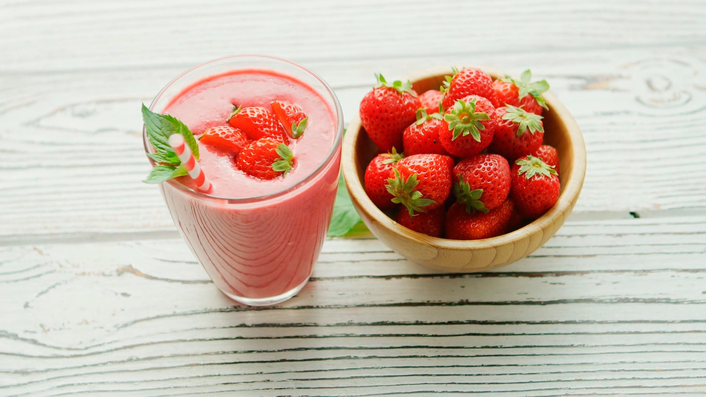

Strawberry Smoothie

Here is a recipe that my whole family uses for smoothies.
You can make lots of alterations to it so that it's your own!
Ingredients
- 2 cups of strawberries, frozen or fresh
- 2 cups of milk
- 1 heaping spoonful of peanut butter
- 3 scoops of vanilla ice cream
- several ice cubes, if using fresh strawberries
Steps
- Add the strawberries, milk, and ice if you are using any, to the blender.
Blend until smooth.
- Once the initial ingredients have been blended, add the ice cream and peanut butter.
Again, blend until smooth.
- Serve with strawberries or mint leaves to garnish.
You may also substitute the strawberries for any other fruit, frozen or fresh.